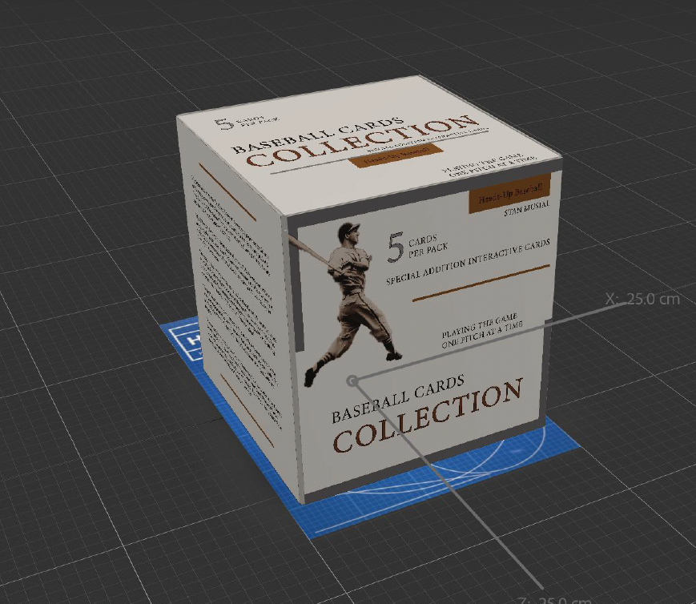

Augmented Reality
Design Statement
The book Heads Up Baseball is aimed at athletes and coaches and covers mental toughness, confidence/self-belief, emotional control, and process-oriented thinking. These themes are represented through my original book design by a baseball diamond blueprint. These themes are brought to life with my AR enhancement by using a box of cards, a 3D baseball diamond, and baseball cards. These visual choices signify strategic planning, navigating the game, as well as the connection between the physical and mental game, using analogy, allusion, and personification. The baseball field and cards can act as an analogy to life in sports, having the cards placed at each base mirrors significant moments and or player influence. The quotes that are presented on the back of each baseball card act as an allusion as they allude to themes and relevant people not only to the book but also to baseball culture and history. Personification is shown through the quotes on the baseball cards and animations. With these features, the baseball cards feel more lifelike, giving a better vision of the players' memories and actions.
Key Features
- Augmented Reality – AR expands the physical book into an interactive experience, connecting the mental and physical sides of the game through 3D visuals and engagement.
- Strategic Visual Choices – Blueprint = planning and discipline; Cards = culture and memory; AR = immersion and presence.
- Emotional & Cultural Depth – The design acts as more than explanation—it embodies baseball as a metaphor for resilience, teamwork, and growth.
- Thematic Representation – The baseball diamond blueprint symbolizes mental toughness, confidence, emotional control, and process-oriented thinking, tying strategy in sport to mindset.
Process Work
The design process began with sketching and concept exploration to capture the book’s narrative in physical form. These early ideas evolved into digital prototypes and 3D models, refining how AR could interact with structure and layout. Below is a deeper look at how the concept developed — from ideation to final execution.